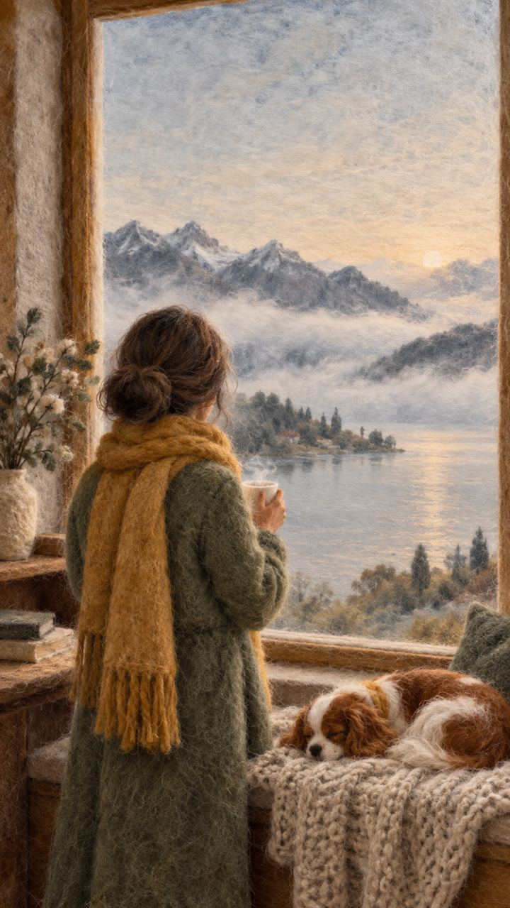

Коучинг для тех, кто переехал
Твоя жизнь, а не пауза между странами
Помогаю построить в новой стране свою жизнь и своё дело и снова почувствовать, что ты дома.

Помогаю построить в новой стране свою жизнь и своё дело и снова почувствовать, что ты дома.

Выбери фразу, в которой узнаёшь себя. Правильного ответа нет, и выбрать можно любую.

Я трансформационный коуч и нейрокоуч ICF. Живу в Швейцарии и сама знаю, каково это — начинать жизнь заново в чужой стране.
Трансформационный значит, что мы не ограничимся советами и планом на бумаге. Мы спустимся глубже, туда, где живут привычные реакции, страхи и старые правила, которые здесь больше не работают. Когда меняется что-то внутри, решения снаружи начинают находиться сами.
Как нейрокоуч я понимаю, как мозг реагирует на перемены и незнакомую среду. Почему в новой стране так быстро кончаются силы. Почему простое письмо из ведомства вдруг кажется горой. И почему всё это не про слабость. Одно это понимание снимает с плеч много лишней вины.
Я не тороплю и не тяну за руку. Иду рядом, в твоём темпе.
У меня две отдельные практики, с разными людьми и разными запросами. Объединяет их одно: в обеих я работаю на глубине.
Для тех, кто живёт в Швейцарии и строит здесь свою жизнь. Помогаю найти опору в себе, своё место и своё дело. Онлайн можно и тем, кто переехал в другую страну.
Telegram · InstagramДля тех, кто живёт в Украине. С ними я работаю как психолог по украинской квалификации.
Telegram-канал · InstagramВ Швейцарии я работаю только как коуч. Коучинг не заменяет психотерапию и помощь врача.
В Telegram слово ВСТРЕЧА. Можно добавить пару строк о том, с чем ты пришла, но это не обязательно.
Онлайн и бесплатно. Мы познакомимся, проговорим твой запрос и поймём, насколько я могу быть тебе полезна.
Если мы решим работать вместе, я предложу формат под твой запрос: разовую работу или программу. Если нет, подскажу, куда идти дальше.
Тесты-рефлексии с подробным разбором, PDF и бланком для записей. Ответы остаются только у тебя: я их не вижу.
Где ты сейчас в новой стране и куда идти дальше
Шесть сфер новой жизни: язык, быт, работа, люди, силы и смысл. Покажет, что уже стало опорой, где пока пусто и как ты живёшь между двумя культурами.
Пройти тест → 20 минут · путеводитель и тестЧтобы стать своей и чувствовать себя в новой стране как дома
Семь ступеней: от земли под ногами и своих людей до своего дела и смысла. Покажет, какие ступени уже держат тебя, какая поскрипывает и с чего начать.
Пройти тест →Близость, в которой не нужно терять себя
Покажет, насколько вы близки на самом деле, по четырём опорам пары: близость, страсть, обязательство и умение оставаться собой.
Пройти тест → 15 минут · можно пройти вдвоёмЧтобы снова услышать друг друга и вернуть в пару тепло
Три роли в паре: он — любовник, муж и отец, она — любовница, жена и мать. Покажет, какие роли звучат ярко, а какие стали тише.
Пройти тест →Я не врач и не психотерапевт. Если сил нет месяцами, болит тело, не спится, если есть мысли о том, чтобы не жить, или ты в опасности, пожалуйста, обратись к врачу, психотерапевту или в экстренные службы своей страны. Это не стыдно. Коучинг подключается, когда есть силы двигаться дальше, и я всегда подскажу, к кому обратиться.
Напиши мне в Telegram слово ВСТРЕЧА, и мы найдём время для первых 30 минут. Это бесплатно и ни к чему не обязывает.